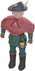
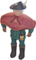

<!doctype html>
<html lang="en">
<meta charset="utf-8">
<meta name="viewport" content="width=device-width,initial-scale=1">
<meta name="theme-color" content="#ece8de">
<link rel="icon" href="data:,">
<title>The Wayfarer · Modular character study</title>
<style>
*{box-sizing:border-box}body{margin:0;background:#ece8de;color:#292c33;font:15px/1.5 system-ui,sans-serif}main{max-width:1100px;margin:auto;padding:clamp(16px,4vw,48px)}
header{display:flex;align-items:end;justify-content:space-between;gap:14px;padding-bottom:14px;border-bottom:1px solid #aaa499}
h1{font:normal clamp(40px,7vw,78px)/.96 Georgia,serif;margin:0;letter-spacing:-.065em}header span{color:#655860;text-align:right}
section{display:grid;grid-template-columns:1fr 250px;gap:28px;margin-top:18px}figure{margin:0;overflow:hidden;position:relative;min-height:400px;height:63svh;max-height:730px;background:radial-gradient(ellipse,#f6f2e7,#d8d4cb)}
canvas{width:100%;height:100%;touch-action:none;display:block}#status{position:absolute;left:12px;top:6px}aside{padding:6px 0}h2{font:normal 23px Georgia,serif;margin:0 0 12px}
aside p{margin:0 0 17px}label{display:block;margin:12px 0}label[for=breadth]{margin-bottom:0}input[type=range]{width:100%;accent-color:#8e4250}input[type=checkbox]{accent-color:#8e4250}
button{font:inherit;border:1px solid #9a9288;color:inherit;background:#f8f4e9;padding:5px 10px;cursor:pointer}button[aria-pressed=true]{background:#394958;color:white}
.camera{display:flex;gap:6px;margin:12px 0}.small{font-size:13px;color:#5c5559}
.map{display:flex;gap:8px;align-items:end;padding:9px 0}.map img{height:100px;width:auto}a{color:#6c3341}footer{margin-top:15px;border-top:1px solid #aaa499;padding-top:12px;font-size:13px}
@media(max-width:720px){section{display:flex;flex-direction:column;gap:10px}figure{height:53svh;min-height:310px}aside{max-width:480px}.camera{margin-bottom:5px}header span{max-width:133px;font-size:12px}}
</style>
<main>
<header><h1>The Wayfarer</h1><span>Blender character study<br>oppo2357</span></header>
<section><figure><canvas aria-label="Interactive rigged wayfarer. Drag to rotate."></canvas><p id="status">Loading character…</p></figure>
<aside><h2>Fitting room</h2><p>A mapmaker carries a brass lantern beneath a scalloped travelling cape. Try the shoulder fit and inspect the separate pieces.</p>
<label for="breadth">Torso breadth <output id="percent">0%</output></label><input id="breadth" type="range" min="-100" max="100" value="0">
<label><input type="checkbox" id="hat" checked> Felt hat</label>
<label><input type="checkbox" id="cape" checked> Embroidered cape</label>
<label><input type="checkbox" id="pose"> Bend left arm</label>
<div class="camera"><button id="studio" aria-pressed="true">Studio</button><button id="overhead" aria-pressed="false">35° overhead</button></div>
<p class="small">Drag to orbit. Scroll or pinch to zoom.</p>
<div class="map"></div><p class="small">Map-camera silhouette at 100 px tall.</p>
<a href="wayfarer.glb" download>Download GLB</a> · <a href="wayfarer.blend" download>Blender source</a>
</aside></section>
<footer>Original AI-authored study built with Blender and Python. Includes an eleven-bone demonstration rig, one torso morph and separate garments. The coat uses an original directional texture wash and vertex colour.</footer>
</main>
<script type="importmap">{"imports":{"three":"../miyajima/three.module.min.js"}}</script>
<script type="module" src="view.js"></script>
</html>
